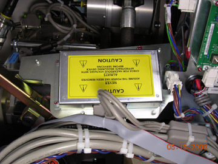
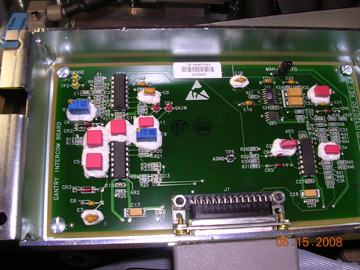
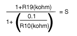

Operating Documentation
Direction 5321294, Rev# 3
GOC6 Service Methods
Operating Documentation |
| Required Persons | Preliminary Reqs | Procedure | Finalization |
|---|---|---|---|
| 2 | NA | 15 mins | 10 mins |
This procedure will enable you to perform the following-
Check intercom functionality
Adjust intercom board gain and sensitivity (if needed)
| Last Revised | May 5, 2008 |
| Item | Qty | Effectivity | Part# | Manufacturer | |
|---|---|---|---|---|---|
| Multi-Meter | 1 | - | - | - | |
| Condition | Reference | Eff |
|---|---|---|
FE should employ a volunteer to assist with this procedure. | - | - |
At the console set the SCIM patient volume control to its midway point. You should not hear anything in the background when no one is speaking. If someone is talking at the gantry, the intercom should be activated.
Next rotate the gantry at 0.35 sec (fastest gantry rotation speed) using a DDC (Diagnostic Data Collection) scan with no X-ray. The intercom system will come on briefly while the system is accelerating but should shut off once it reaches the 0.35 sec speed.
Verify the system will come on when someone is laying on the table and speaking into the microphone while the system is rotating at 0.35 seconds.
If steps 2 and 3 are working correctly and you can hear the patient clearly there is no need to make any adjustments. Go to Finalization.
If the intercom system comes on but the volunteer is not heard clearly or the intercom comes on and stays on (or on/off intermittently) during gantry rotation proceed to the adjustment procedures.
The intercom board comes with R19 preset to 5.5k ohm and R10 preset to 1.25k ohm. No adjustments are normally needed.
Access the Gantry Intercom board.
Remove gantry right side cover
Disable Gantry Axial drive, HVDC and 120 VAC from the service switch panel.
Remove the cover of the Intercom board found next to the Service Switch panel using the Intercom Board Replacement procedure as a reference.
Illustration 1: Gantry Intercom Board Location

Illustration 2: Gantry Intercom board

Verify the R19 and R10 values are set correctly by using a multi-meter to measure test points TP1 & TP2 (yellow), for R10, and TP3 & TP4 (red), for R19. The intercom board must be disconnected from the system in order to properly measure these test points.
If the intercom system comes on when the patient is talking but you are unable to hear the person clearly adjust R19 on the intercom board. Increase the resistance by 1K at a time until you can hear the person clearly. This will increase the sensitivity of ALC also.
If the system comes on and stays on or if it comes on and off intermittently when rotating at 0.35 seconds you will need to adjust the R10 potentiometer on the intercom board in the gantry. Increase the resistance by 100 ohms at a time.
Reconnect the intercom board, re-enable gantry power and repeat the functional check section. Continue this process until the intercom system stays off when no one is talking, is activated when someone is speaking and the patient can be heard clearly.
Sudden noises will cause the intercom to engage for a few seconds. This is normal.
R19 is used to control the overall signal gain. Decrease the R19 value to decrease gain. Increase the R19 value to increase the gain (G).
The gain is calculated by:
1+ R19(kohm) = G
R10 combined with R19 is used to control the sensitivity of Automatic Level Control (ALC). If the console speaker turns on frequently without patient speaking during 0.5 sec rotation increase the R10 value to desensitize ALC until the speaker turns off during gantry rotation without patient speaking. If patient has to yell to activate ALC, decrease the R10 resistance to increase sensitivity.
The sensitivity (S) is calculated by:
Illustration 3: Sensitivity

Replace intercom board cover if previously removed.
Turn on any gantry service switches previously turned off.
Replace Gantry side cover.